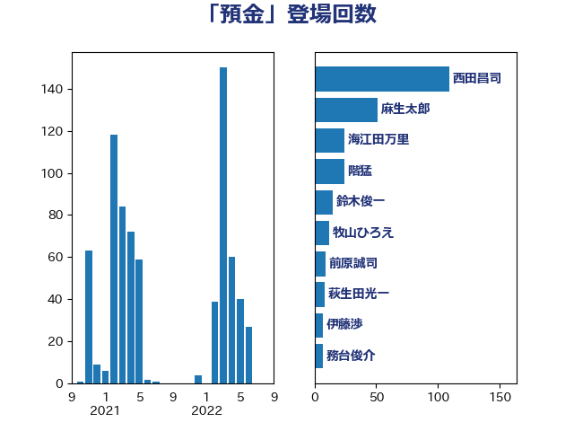

単語「預金」

| 西田昌司 | 自由民主党 | 109 回 |
| 麻生太郎 | 自由民主党 | 51 回 |
| 海江田万里 | 立憲民主党 | 24 回 |
| 階猛 | 立憲民主党 | 24 回 |
| 鈴木俊一 | 自由民主党 | 15 回 |
| 牧山ひろえ | 立憲民主党 | 12 回 |
| 前原誠司 | 国民民主党 | 9 回 |
| 萩生田光一 | 自由民主党 | 8 回 |
| 伊藤渉 | 公明党 | 7 回 |
| 務台俊介 | 自由民主党 | 7 回 |
| 古賀之士 | 立憲民主党 | 6 回 |
| 坂本哲志 | 自由民主党 | 6 回 |
| 山下貴司 | 自由民主党 | 6 回 |
| 山田賢司 | 自由民主党 | 6 回 |
| 櫻井周 | 立憲民主党 | 6 回 |
| 赤木正幸 | 日本維新の会 | 6 回 |
| 和田義明 | 自由民主党 | 5 回 |
| 平井卓也 | 自由民主党 | 5 回 |
| 田村貴昭 | 日本共産党 | 5 回 |
| 秋野公造 | 公明党 | 5 回 |
| 小田原潔 | 自由民主党 | 4 回 |
| 岡本三成 | 公明党 | 4 回 |
| 河野義博 | 公明党 | 4 回 |
| 笠井亮 | 日本共産党 | 4 回 |
| 藤巻健太 | 日本維新の会 | 4 回 |
| 伊佐進一 | 公明党 | 3 回 |
| 古屋範子 | 公明党 | 3 回 |
| 宗清皇一 | 自由民主党 | 3 回 |
| 岸田文雄 | 自由民主党 | 3 回 |
| 杉本和巳 | 日本維新の会 | 3 回 |
| 櫻井充 | 自由民主党 | 3 回 |
| 浅田均 | 日本維新の会 | 3 回 |
| 船橋利実 | 自由民主党 | 3 回 |
| 西村康稔 | 自由民主党 | 3 回 |
| 音喜多駿 | 日本維新の会 | 3 回 |
| 倉林明子 | 日本共産党 | 2 回 |
| 小倉將信 | 自由民主党 | 2 回 |
| 末松義規 | 立憲民主党 | 2 回 |
| 東徹 | 日本維新の会 | 2 回 |
| 柚木道義 | 立憲民主党 | 2 回 |
| 柳ヶ瀬裕文 | 日本維新の会 | 2 回 |
| 梶山弘志 | 自由民主党 | 2 回 |
| 江田憲司 | 立憲民主党 | 2 回 |
| 沢田良 | 日本維新の会 | 2 回 |
| 浜田聡 | NHK党 | 2 回 |
| 田畑裕明 | 自由民主党 | 2 回 |
| 福田昭夫 | 立憲民主党 | 2 回 |
| 菅義偉 | 自由民主党 | 2 回 |
| 谷合正明 | 公明党 | 2 回 |
| 赤澤亮正 | 自由民主党 | 2 回 |
| 野上浩太郎 | 自由民主党 | 2 回 |
| 野田聖子 | 自由民主党 | 2 回 |
| 吉田宣弘 | 公明党 | 1 回 |
| 塩川鉄也 | 日本共産党 | 1 回 |
| 大串博志 | 立憲民主党 | 1 回 |
| 宮本岳志 | 日本共産党 | 1 回 |
| 宮本徹 | 日本共産党 | 1 回 |
| 小山展弘 | 立憲民主党 | 1 回 |
| 小島敏文 | 自由民主党 | 1 回 |
| 小林鷹之 | 自由民主党 | 1 回 |
| 山際大志郎 | 自由民主党 | 1 回 |
| 市村浩一郎 | 日本維新の会 | 1 回 |
| 平木大作 | 公明党 | 1 回 |
| 後藤祐一 | 立憲民主党 | 1 回 |
| 松沢成文 | 日本維新の会 | 1 回 |
| 泉健太 | 立憲民主党 | 1 回 |
| 浅川義治 | 日本維新の会 | 1 回 |
| 熊谷裕人 | 立憲民主党 | 1 回 |
| 田野瀬太道 | 無所属 | 1 回 |
| 神田憲次 | 自由民主党 | 1 回 |
| 神田潤一 | 自由民主党 | 1 回 |
| 野間健 | 立憲民主党 | 1 回 |
| 鈴木隼人 | 自由民主党 | 1 回 |
| 長峯誠 | 自由民主党 | 1 回 |
| 須藤元気 | 無所属 | 1 回 |
| 高市早苗 | 自由民主党 | 1 回 |